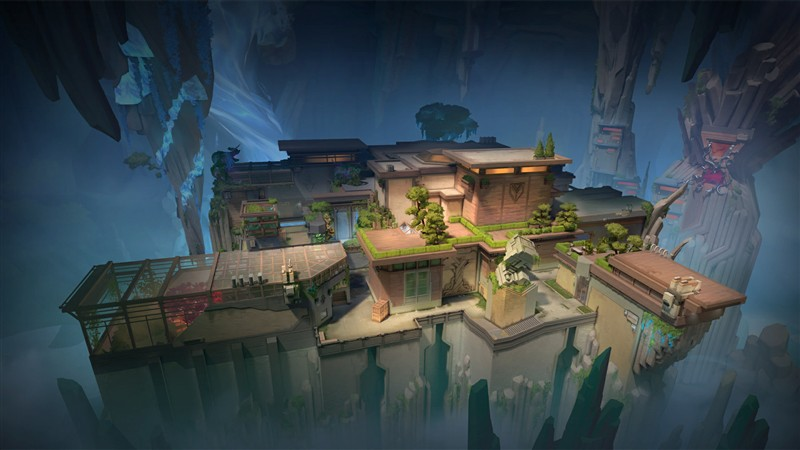
Abyss
Fortaleza oculta nas profundezas sem paredes de limite externo, onde quedas acidentais ou saltos arriscados pelas bordas são fatais.
Cada mapa de VALORANT apresenta uma mecânica tática exclusiva, como portas mecânicas, teleportadores, tirolesas, abismos ou três Spike Sites. Estude o layout antes de entrar na fila competitiva.

Fortaleza oculta nas profundezas sem paredes de limite externo, onde quedas acidentais ou saltos arriscados pelas bordas são fatais.
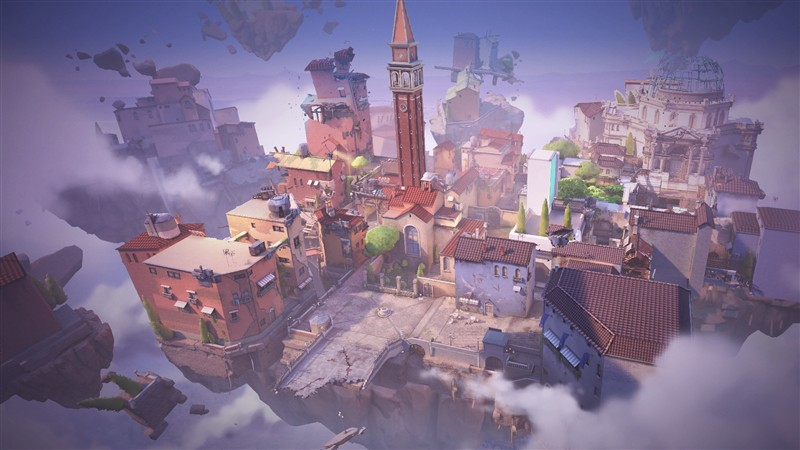
Mapa situado em Veneza, Itália, com um amplo pátio central e portas mecânicas destrutíveis nos dois Spike Sites.
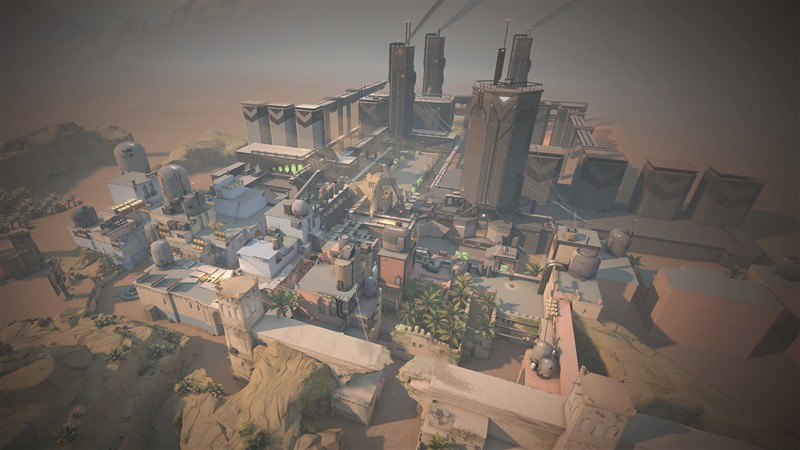
Localizado no Marrocos, não possui área de Meio tradicional, mas conta com dois teleportadores de mão única para rotações rápidas.
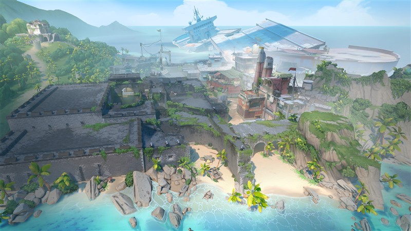
Ilha tropical no Triângulo das Bermudas com espaços abertos gigantescos, ideal para combates a longa distância e uso de Viper.
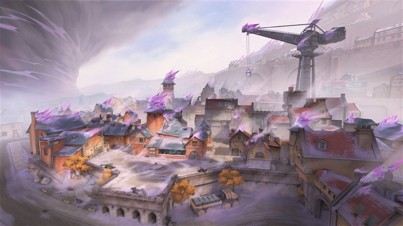
Complexo industrial fortificado com múltiplos níveis e corredores táticos que exigem uso coordenado de utilitários para entrada.
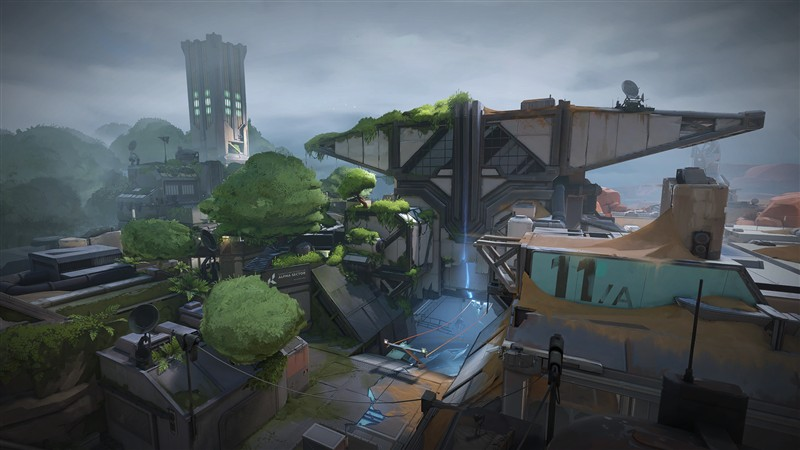
Instalação secreta dividida ao meio onde os defensores nascem no centro do mapa e os atacantes podem pressionar pelos dois lados usando tirolesas.
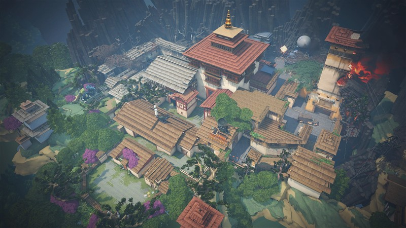
Situado em um monastério no Butão, traz três Spike Sites (A, B e C), exigindo controle rigoroso de rotações defensivas.
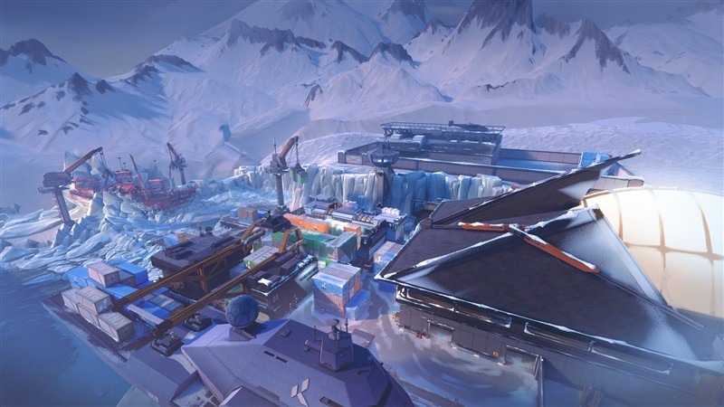
Porto ártico na Rússia repleto de contêineres elevados, tirolesas horizontais e ângulos verticais desafiadores.
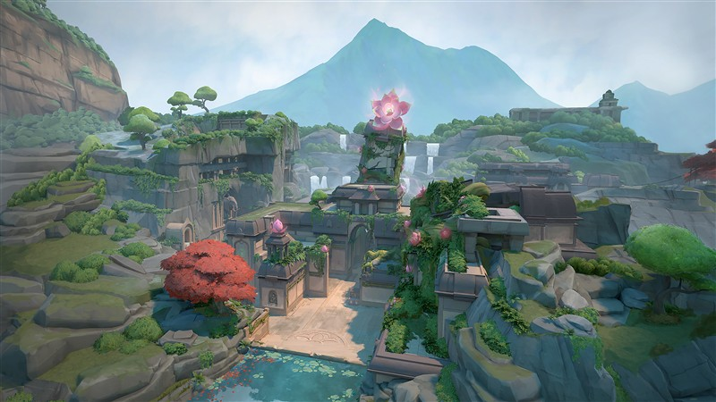
Estrutura ancestral na Índia com três Spike Sites e duas grandes portas giratórias que permitem mudar a direção do ataque.
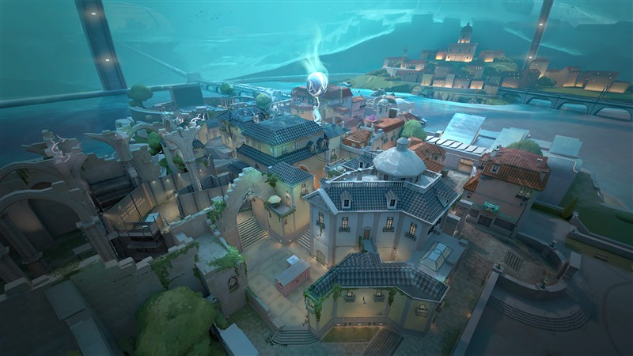
Cidade subaquática em Portugal com layout tradicional de três rotas (Bomb A, Meio com diversas conexões e corredor longo no Bomb B).
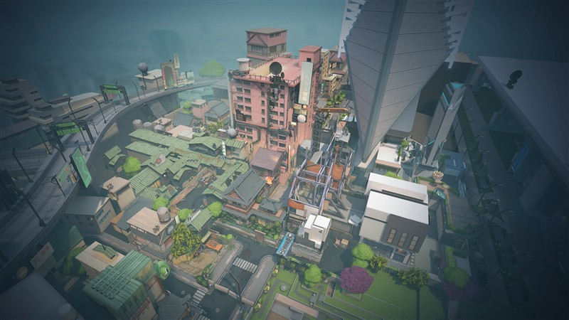
Cenário urbano em Tóquio com elevações verticais, cordas de subida e pontos estreitos de entrada nos dois Spike Sites.
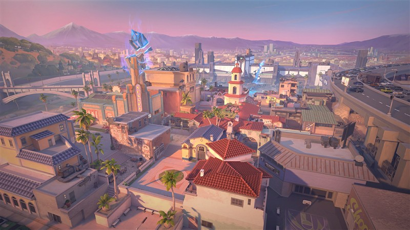
Inspirado em Los Angeles, possui dois Spike Sites e um Meio decisivo com uma porta mecânica central.